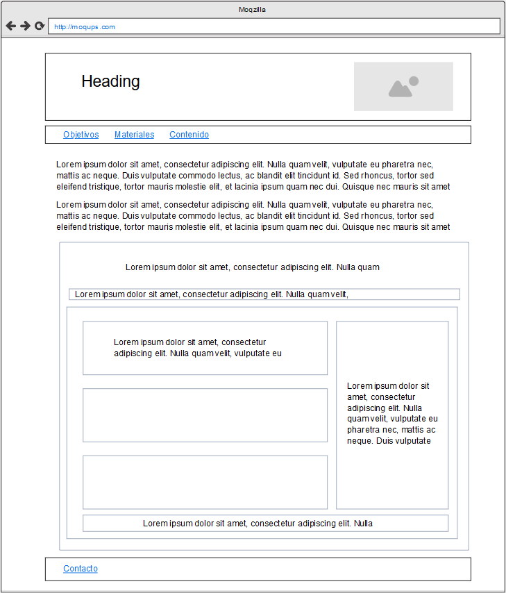

Objetivo principal
Diseñar un ovi o ova que explique la estructura básica de html 5 para la UNAD
Objetivos específicos
- Identificar la estructura básica de html5 y las etiquetas que la conforman
- Maquetar una ova con la información recolectada
- Diseñar una ova de acuerdo con la maquetación establecía
Materiales
-
Estructura de HTML5 y para qué se utiliza la semántica del código
https://www.arsys.es/blog/soluciones/hosting/estructura-de-html5-y-para-que-se-utiliza-la-semantica-del-codigo -
HTML5, estructura básica y elementos semánticos
https://www.eniun.com/html5-estructura-basica-elementos-semanticos -
Curso de HTML5 esencial - Estructura (header y más) Yotube
https://www.youtube.com/watch?v=DxumDNXRtpI -
Estructura HTML5

-
Logo institucional UNAD

Contenido
HTML 5 trajo consigo diferentes mejoras ya sea desde los elementes de CSS, en las Apis de JavaScript o en el mismo leguaje HTML entre ellos la semántica de código que nos ayuda a definir las diferentes secciones que va a tener nuestra pagina web, cabe aclarar que esto solo afecta el contenido de la pagina web por tal motivo se debe realizar dentro de la etiqueta <body>
Anteriormente para crear una división de los elementos que conformaba nuestras pagina web con la etiqueta <div>, esto no permitía reconocer con facilidad que contenida se encontraba en esta división. Hoy en día se recomiendo el uso de la semítica de código para englobar el cierto contenido especifico ya que estas son auto explicativas dado su nombre especifico y esto nos ayudara a realizar mantenimiento a nuestra pagina en un futuro además de ayudarnos con el posicionamiento de la pagina frente a los buscadores web.
La semántica de código está conformada por 6 etiquetas las cuales son:
- <Header>: Agrupa el contenido de la cabecera en nuestras pagina web.
- <Nav>: agrupa cualquier menú de navegación en nuestra página web.
- <Section>: define las secciones que va a tener nuestra página web en general suele ser solamente una sección que agrupa todo el contenido (main).
- <article>: se usa para definir unidades de contenido que pueden ser independientes unas de otras.
- <aside>: contiene información complementaria que no añade gran valor a la temática de la página generalmente usada para poner banners o publicidad.
- <footer>: se usa para definir el pie de pagina de la pagina web generalmente usa para añadir información de contactos.
Mockup
Bibliografía
García, J. M. B. (2019, 21 octubre). Estructura de HTML5 y para qué se utiliza la semántica del código. Blog de arsys.es. https://www.arsys.es/blog/soluciones/hosting/estructura-de-html5-y-para-que-se-utiliza-la-semantica-del-codigo
HTML5, estructura básica y elementos semánticos. (2020, 20 julio). Eniun. https://www.eniun.com/html5-estructura-basica-elementos-semanticos/
Develoteca. (2015, 10 mayo). Curso de HTML5 esencial - Estructura (header y más) [Vídeo]. YouTube. https://www.youtube.com/watch?v=DxumDNXRtpI
Logo institucional UNAD. (s. f.). [Imagen]. Símbolos institucionales. https://informacion.unad.edu.co/transparencia-y-acceso-a-la-informacion/acerca-de-la-unad/simbolos-institucionales